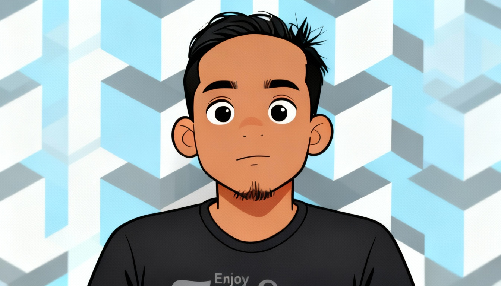
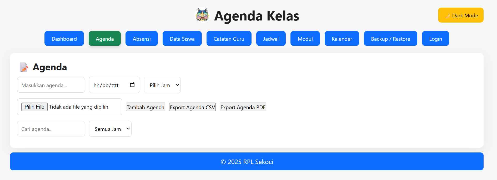
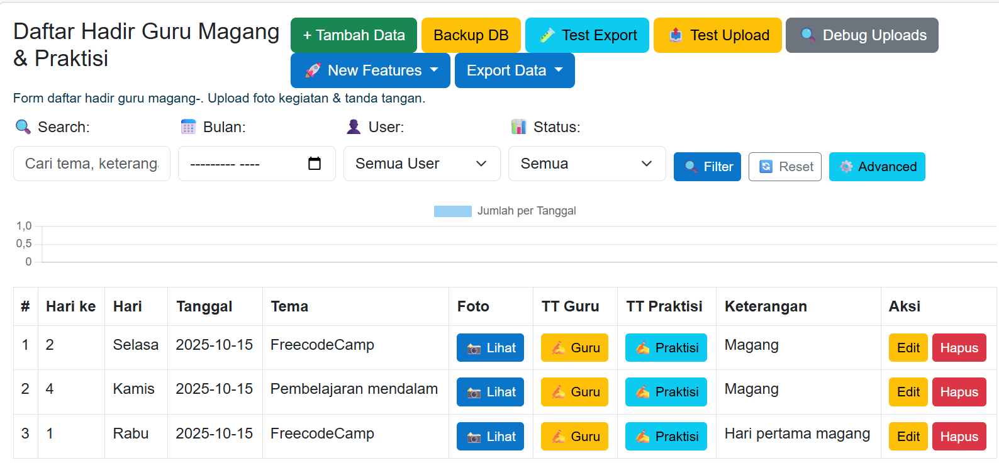

Tentang Saya

Teguh Gunawan
Saya Seorang Siswa Smk Negeri 1 Cikaum
Saya tertarik dalam bidang teknologi informasi dan pengembangan perangkat lunak. Saya memiliki keterampilan dalam pemrograman, desain web, dan manajemen proyek. Saya selalu bersemangat untuk belajar hal-hal baru dan mengembangkan kemampuan saya di bidang ini.
Riwayat Pendidikan
Sekolah Dasar Negeri Gandamanah
SDN Gandamanah
Tahun Ajaran: | 1997 - 2003
Sekolah Menengah Negeri 4 Subang
SMPN 4 Subang
Tahun Ajaran: | 2003 - 2006
Proyek yang pernah dibuat

Aplikasi Agenda Kelas
Aplikasi agenda kelas berbasis CRUD, dengan menggunakan PHP MYSQL dan LARAVEL
Lihat Demo

Aplikasi Magang
Aplikasi magang berbasis CRUD, dengan menggunakan PHP MYSQL dan LARAVEL
Lihat Demo